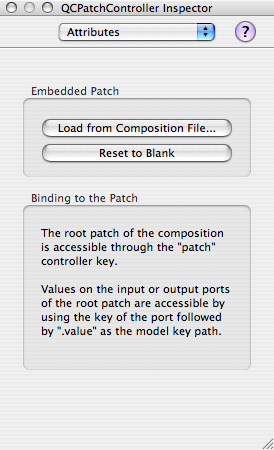
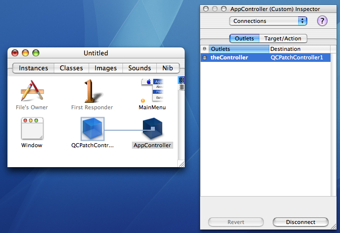

|
Changing the composition programmatically on the QCPatchControllerThe tutorial on Cocoa bindings with Quartz Composer available in the Publishing Ports and Binding Them to Controls chapter of the Quartz Composer Programming Guide demonstrates how to set up bindings in Interface Builder. It specifically shows how to load a composition on an instance of a QCPatchController through the Attributes Inspector panel: Figure 1: The Attributes inspector panel for a QCPatchController instance in Interface Builder.  However, the composition does not have to be stored within the QCPatchController instance (unless you wish to use the Test Interface feature of Interface Builder), and can be loaded or replaced dynamically from the host application at runtime. This is achieved by loading the composition on the QCView bound to the QCPatchController, and it will update the QCPatchController's embedded composition automatically. Assuming the newly loaded composition has a similar set of input and outputs (types and keys), the bindings will continue to work fine. Listing 1: Replacing programmatically the composition in a QCPatchController.
NSString* path = [[NSBundle mainBundle] pathForResource:@"MyComposition" ofType:@"qtz"];
/*
We assume the "patch" parameter of the "myQCView" QCView instance has been bound to the
"patch" property of the QCPatchController in Interface Builder
*/
if([myQCView loadCompositionFromFile:path]) {
/*
The composition has been successfully replaced on the QCPatchController and its QCView
and the bindings have been updated
*/
}
else {
/*
Handle errors here
*/
}
Creating bindings programmatically with a QCPatchControllerAlthough there is no API for the QCPatchController class, it is actually possible to creating bindings to a QCPatchController instance programmatically instead of using Interface Builder. This allows to create and bind user interface elements at runtime for instance. The first step is to add an outlet, which will be used to access the QCPatchController instance, to the interface of the class which will set up the bindings: Listing 2: Adding an outlet to an example AppController class.
@interface AppController : NSObject
{
IBOutlet id theController;
}
@end
In Interface Builder, this outlet must be connected to the QCPatchController instance in the nib file. Figure 2: Connecting the outlet of the AppController example class to the QCPatchController instance.  The second step is to use the �[NSObject bind:toObject:withKeyPath:options:] method to bind a parameter of the receiver (typically a UI control) to one of the properties of the QCPatchController. This method is part of the NSKeyValueBindingCreation informal protocol described in Application Kit Reference. Note: The key path to use is the same as the one that would be used in Interface Builder's Bindings inspector panel, except the "Controller Key" and "Model Key Path" are concatenated together using a "." separator. Listing 3: Creating a binding programmatically between a QCPatchController and a UI control.
NSMutableDictionary* options;
/*
This creates a binding between a NSButton control, "myButton",
and a Boolean input of the composition identified with the key "Foo"
*/
options = [NSMutableDictionary new];
[options setObject:[NSNumber numberWithBool:NO] forKey:@"NSConditionallySetsEnabled"];
[options setObject:[NSNumber numberWithBool:NO] forKey:@"NSRaisesForNotApplicableKeys"];
[myButton bind:@"value" toObject:theController withKeyPath:@"patch.Foo.value" options:options];
[options release];
/*
The binding can be broken using the -unbind: method
*/
[myButton unbind:@"value"];
Note: The list of UI controls and their binding parameters are listed in Cocoa Bindings Reference. Using bindings to be notified when inputs or outputs values of a composition changeThe Cocoa bindings mechanism relies on Key Value Coding (KVC) and Key Value Observing (KVO), which have corresponding informal protocols NSKeyValueCoding and NSKeyValueObserving, both described in Foundation Reference. By using the KVO APIs directly, it is possible to observe changes on the composition inputs or outputs values, and be notified automatically when they happen. Listing 4: Observing value changes on a composition input through the QCPatchController and KVO.
/*
This starts observing value changes on the input
*/
[theController addObserver:self forKeyPath:@"patch.Foo.value" options:0 context:NULL];
/*
The observer (here self) must implement this method which will be called
by KVO whenever the value on the input changes
*/
- (void) observeValueForKeyPath:(NSString*)keyPath ofObject:(id)object
change:(NSDictionary*)change context:(void*)context
{
//Do something here
}
/*
This stops observing value changes on the input
*/
[theController removeObserver:self forKeyPath:@"patch.Foo.value"];
Document Revision History
Posted: 2006-03-03 | ||||||||||||
|